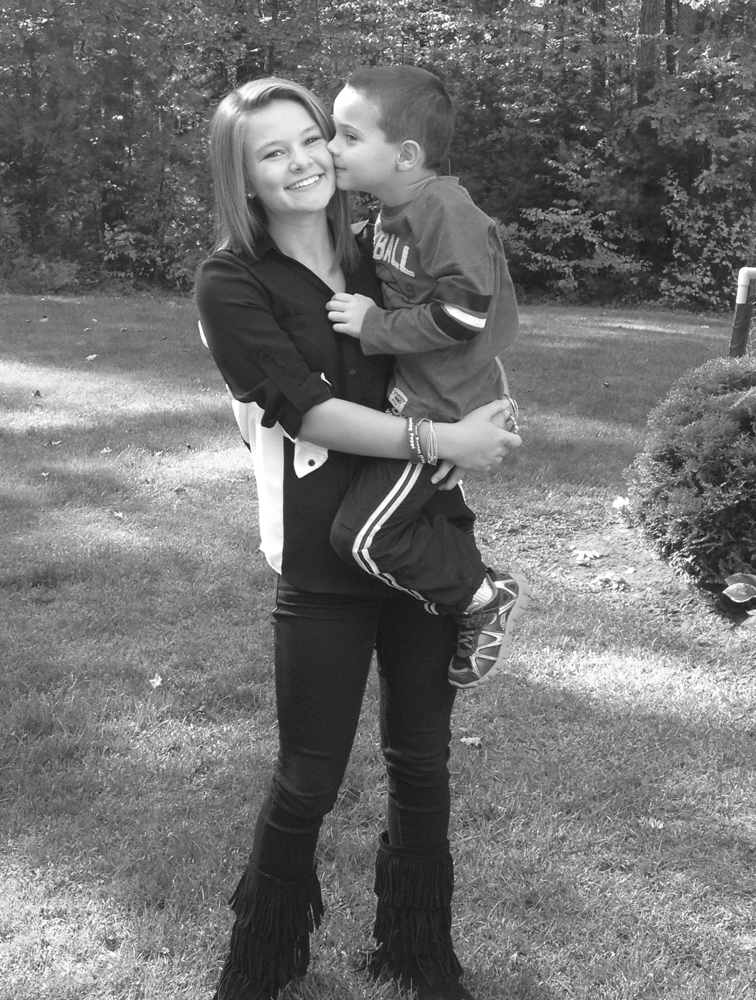
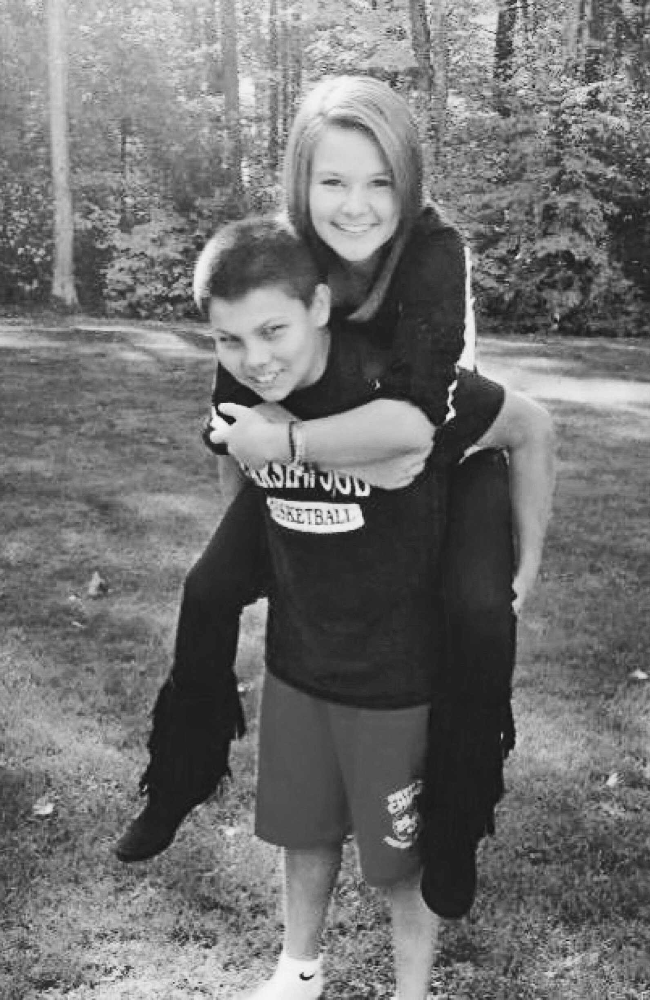

About Me
Home About Me Photo Gallery My Favorites
Hello,
My name is Jessica Kimball, I am a sophomore transfer student at The University
of Maine. Last year I attended Florida International University in Miami, Florida.
I graduated from Marshwood High School which is located in Southern Maine. In high
school I played field hockey and spent a lot of my time focusing on my school work.
I have two younger siblings, Connor and Caleb. Connor is 16, he enjoys playing
football and art. Caleb is 9, he enjoys art as well but also loves to play sports.
My siblings and I are very close, it was difficult to move so far away from them
for college which is one of the reasons why I transferred to The University of Maine.
I am double majoring in Finance and Business Marketing. I intend to move to Boston
when I graduate to pursue a career in Finance.

